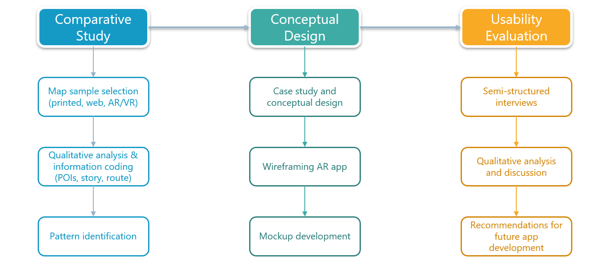

TUM AR
Conceptual design for a map-based storytelling mobile app using augmented reality
Project Overview
Project type
Individual Research - M.Sc. Thesis
Deliverables
Interactive mockups and user-centered design recommendations
Duration
6 months (Oct 2020 - Mar 2021)
Responsibilities
- Comparative analysis of storytelling in printed, web, and AR/VR maps
- Conceptual design: wireframes and interactive mockups
- Usabilities testing and analysis
- Formulating user-centered design recommendations
Tools used
Marvel, Adobe Illustrator
Problem statement
Maps are powerful tools for storytelling, yet modern advancements in mobile and web mapping often prioritize technical capabilities over intuitive and engaging user experiences. This gap in design focus inspired me to explore how emerging technologies like Augmented Reality (AR) could transform storytelling and navigation on mobile devices. Through a case study, I aimed to develop user-centered design recommendations that enhance usability and engagement in place-based AR experiences.
Challenges
My role was to design initial recommendations for a mobile AR app concept that guided users through a place of interest, blending storytelling with route visualization.
One of the key challenges was to determine how multimedia elements could reduce visual clutter on smaller displays, making the interface more accessible and engaging.
This led to the central question:
How can Augmented Reality (AR) transform map-based storytelling and navigation into an immersive, user-friendly experience?
Methodology
Case study area
I chose the TUM campus as the case study area as it provided a focused and achievable scope for exploring AR-based navigation and storytelling within the constraints of time and resources.
Target audience
The intended users were tourists visiting the historic 150-year-old TUM campus, as well as students—both new and returning—seeking an engaging and informative experience while navigating the campus.
Workflow
I employed a mixed-methods approach, combining three steps:

{kind=link}
Comparative analysis
To inform the conceptual design, I analyzed 38 samples across printed, web, and AR/VR mediums. The aim was to identify patterns in using multimedia to design narratives and navigation.
{kind=link}
Key insights & pain points:
Conceptual design
Based on the comparative study, I identified essential visual and multimedia elements (e.g., POIs, narratives, routes, additional information). These elements were tailored to AR’s capabilities while addressing challenges like visual clutter and accessibility.
{kind=link}
Sketching & Wireframing
Initial sketches explored how features like storytelling and route visualization could coexist in an AR environment. These sketches were refined into wireframes focusing on:
Iterative Process:
{kind=link}
Data collection and design process
For the mockups, I opted for a minimalistic design to prioritize key actions and maintain focus.
The color palette for the main interface was chosen to reflect TU Munich’s branding, reinforcing familiarity, simplicity and ease of navigation. The primary colors represent TUM’s academic identity, while accent colors were added for POI categories (e.g., green for open spaces, blue for buildings).

Clean and legible sans-serif fonts were selected to ensure readability across various screen sizes.
For multimedia, I collected text for story content, photographs of POIs, audio, video, and designed a TUM campus map, icons, buttons, and markers in Adobe Illustrator for the mockup and narrative design. I created GIFs to stimulate the immersive AR experience through the mockups.

Finally, all processed elements were integrated into Marvel App to develop interactive mockups.
Mockup design
I developed high-fidelity mockups to translate conceptual ideas into a tangible design. The designs were made using Illustrator and then transformed into interactive mockups using Marvel.
The designs featured:
While feedback from the usability testing highlighted opportunities for improvement, such as clearer navigation markers and enhanced interactivity, these insights were documented as design recommendations for future iterations rather than directly implemented within the scope of this project.

Usability testing
For usability testing, I conducted semi-structured interviews with 22 users, including TUM students and non-students (tourists). Participants were asked to perform tasks like navigate through the interactive mockups to reach a specific point of interest while thinking aloud to capture real-time feedback.
{kind=link}
Insights and User Feedback:
{kind=link}
Recommendations Documented:
The usability feedback informed actionable recommendations for future development phases, including refining iconography, improving transitions, and enhancing AR-based storytelling features. These insights were not implemented within the project timeline but serve as a foundation for further design iterations.
Next Steps
While this project concluded with detailed design recommendations, the following steps are envisioned for future development:
Reflections
This project marked a significant milestone in my journey as a researcher and aspiring UX designer. While it was conducted during a time when I was less focused on UX design as a career path, it allowed me to:
This project served as a foundation that complements my recent experiences, showcasing my ability to approach UX challenges with creativity and critical thinking.